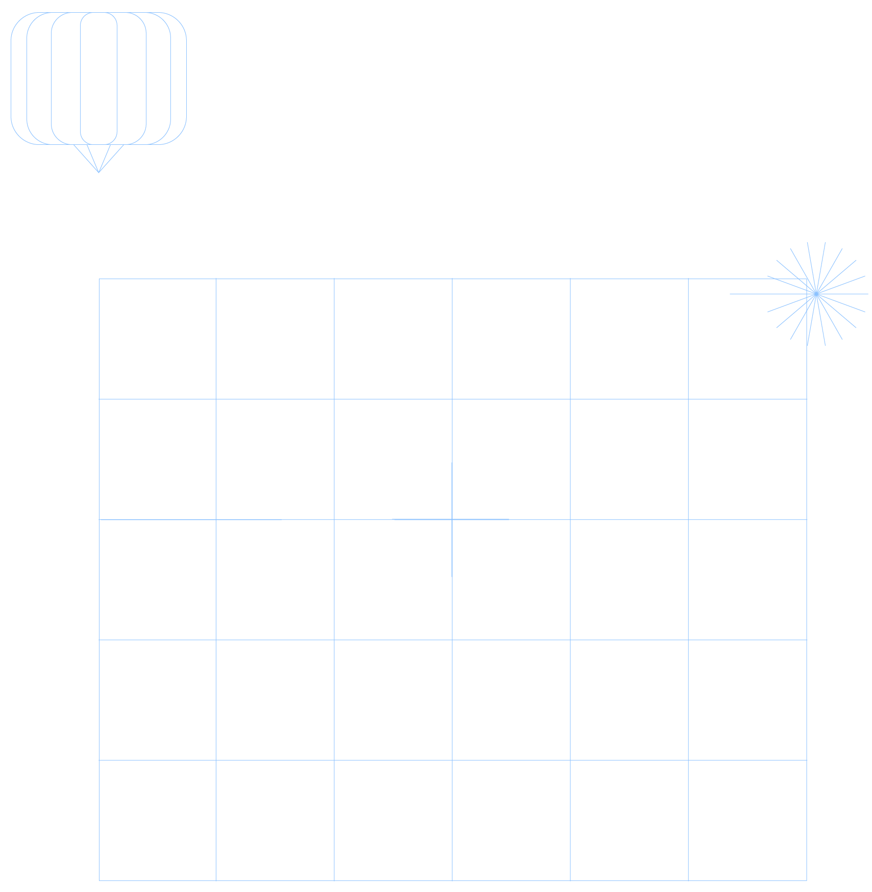
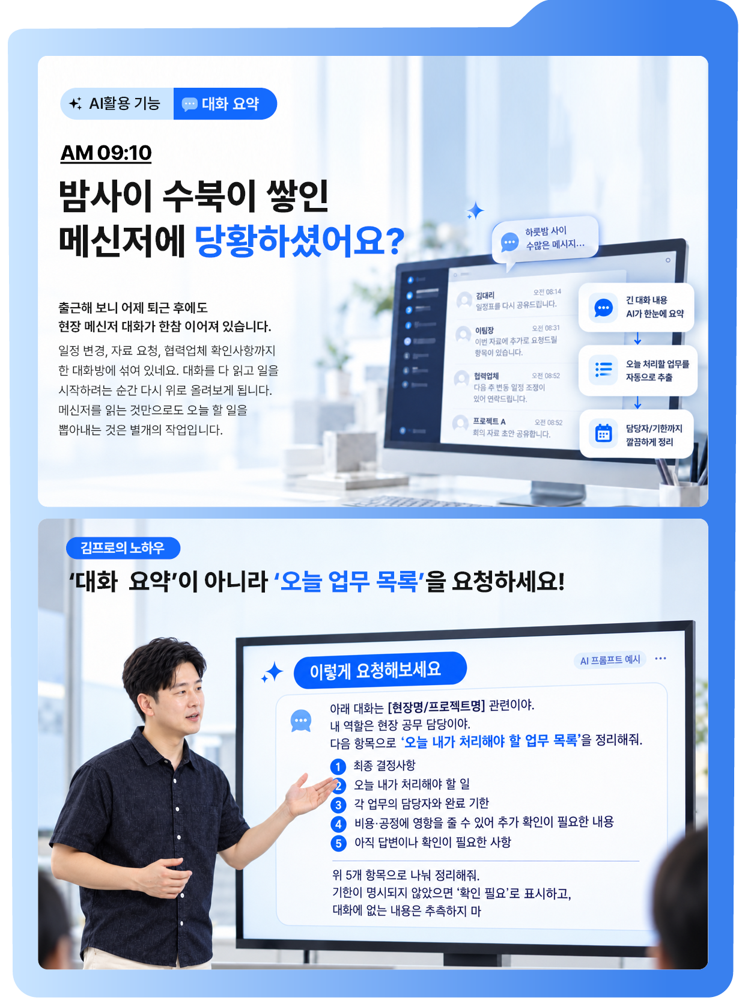
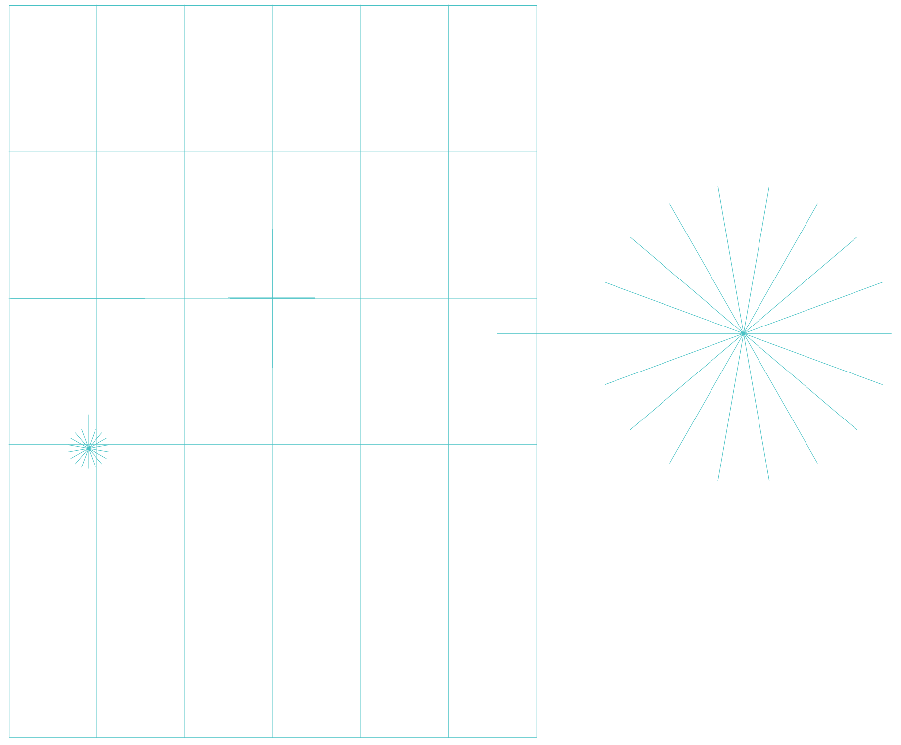
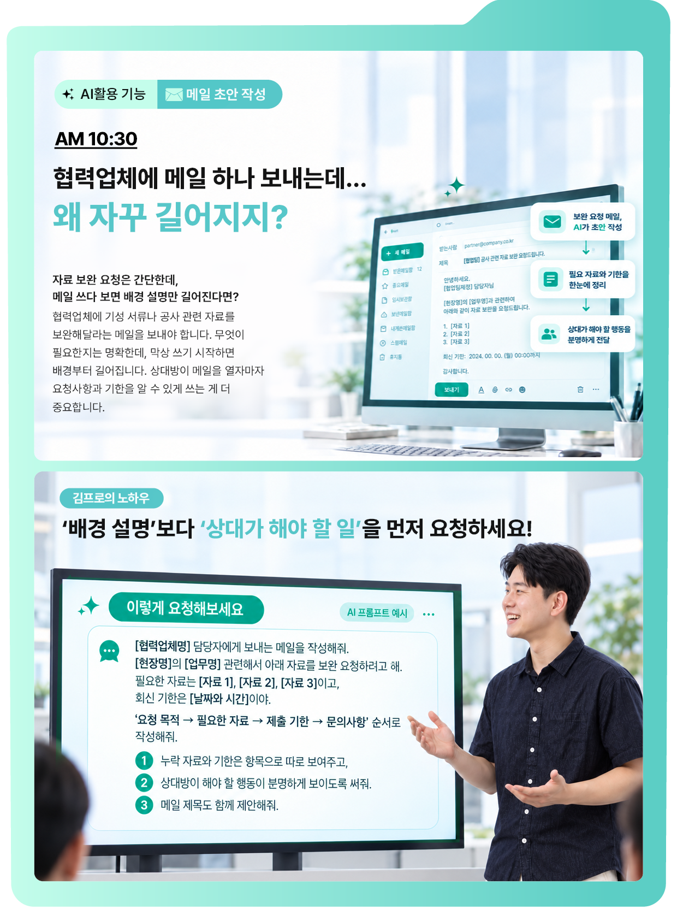
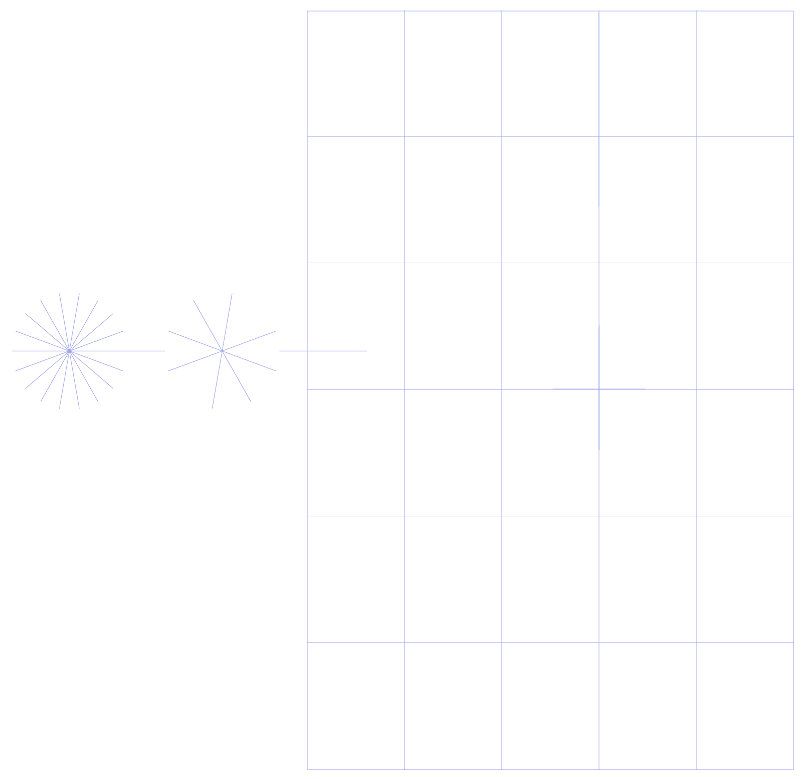
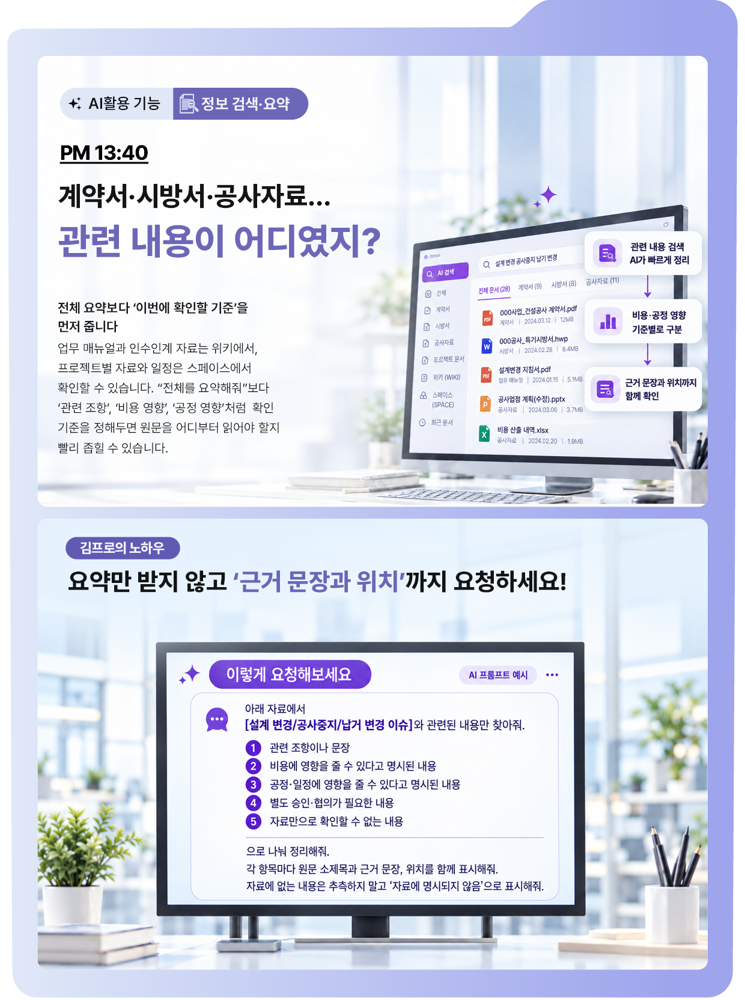
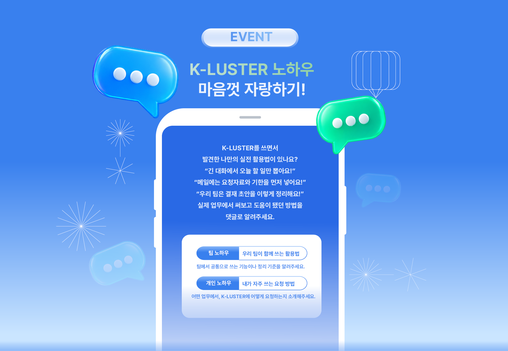
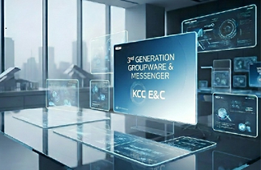
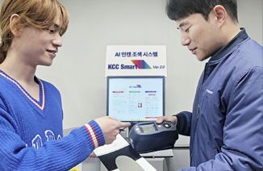

AI X파일SPECIAL THEME
K-LUSTER로 업무 디테일 UP
김 프로의 실전 사용법
메일? 자료? 번역? 뭐가 문제야!
AI 요약 | 김 프로의 실전 사용법
K-LUSTER로 반복 업무 시간을 줄이고 판단과 조율이 필요한 일에 집중해보세요. 긴 대화에서는 오늘 처리할 업무 목록을, 메일에서는 상대가 해야 할 일과 기한을 요청합니다. 자료를 검색할 때는 확인 기준을 먼저 주고 근거 문장과 위치까지 함께 확인하는 것이 김 프로의 노하우입니다.
2026년 시작한 KCC건설의 차세대 그룹웨어 K-LUSTER, 여러분은 업무에서 얼마나 활용하고 있나요? 중요한 건 기능을 많이 아는 것이 아니라, 어떤 일은 AI에 맡기고 어떤 일에 내가 집중할지 구분하는 것이죠. KCC건설 현장공무팀 김지효 프로는 반복해서 읽고, 정리하고, 초안을 만드는 데 쓰던 시간을 K-LUSTER로 줄이고, 그만큼 판단과 조율이 필요한 핵심 업무에 더 집중하고 있습니다. 김 프로만의 AI 활용 X파일을 열어볼까요?







이 이야기의 키워드
#K-LUSTER#AI활용 기능#대화요약#노하우#업무 목록#메일 초안 작성#정보 검색·요약
이번 이야기는 어떠셨나요?
DISCOVER

K-LUSTER 오픈, KCC건설 차세대 그룹웨어 시대를 열다
AI 네이티브, 지금이 기회다!
김덕진 대표 인터뷰

댓글 3
min*
AI도 어떻게 질문하느냐에 따라 결과가 달라지는군요!
joy*
메일 초안 작성할 때 꼭 활용해 봐야겠어요
kim*
반복 업무는 AI에게 맡기고 중요한 일에 집중! 정말 공감됩니다.